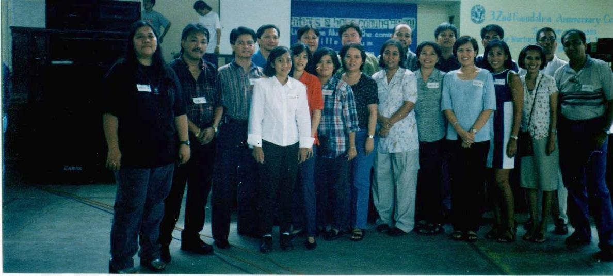

batch picture
front row, Left-to-Right: Irene dela Cruz, Ben Tango, Larry Apuada, Connie Ojeda, Belinda Paras,
Luz Pablo, Eleanor Boco, Carol Daniel, Beth Alampay, Delta Alinea, Tesz Mendoza,
Patricia Barga, Arturo Manuel
back, L-to-R: Rodante Lafrades, Ruben de la Cuesta, Roger Martinez, Ed Jacob, Ariel Lapus,
Salvador Torculas, Federico Laciste; ** see note at bottom **

** Amalia Cruz & Arlene Angelada left after the meeting at Barrio Fiesta
** Raul Regalado came late for the "batch" picture